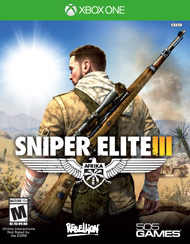

Sniper Elite III


Add to Wishlist
Trailer
Sniper Elite III is a third-person tactical shooter stealth video game developed by Rebellion Developments and published by 505 Games. The game is a prequel to its 2012 predecessor Sniper Elite V2, and is the third installment in the Sniper Elite series. Sniper Elite III is set around three years prior to the events of V2, following the exploits of Office of Strategic Services officer Karl Fairburne as he participates in the North African conflict during World War II, in which he learns of a secret wonder weapon programmed by the Nazi forces. (Wikipedia.com).